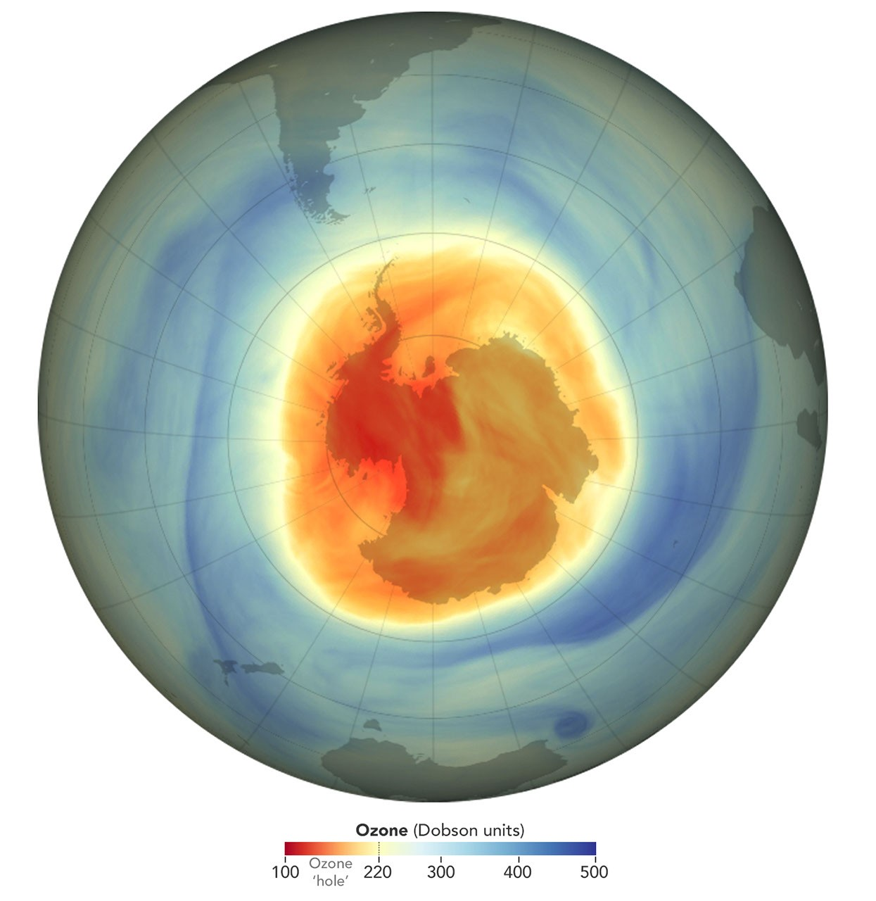

01
TCE de Minas Gerais suspende patrocínio de R$ 32 milhões a Cruzeiro, Atlético e América
GZH · 04/11/2026 · 16:21 (Brasília)Fonte original ↗
 Imirante.comVice de Trump culpa guerra no Irã pela derrota republicana no Congresso dos EUAwww.msn.comPresidente de Israel negocia com partidos para evitar novas eleiçõesYahooSee SpaceX Starship Flight 13 Launch in Stunning 4K Slow MotionCanaltechGears of War: E-Day vende 400 mil cópias; deu prejuízo ao XBOX?Climate CentralSea Level Rise Worsens Coastal Flooding and Storm SurgesMiddle East EyeMorning updateND Mais33 países emitem alerta e orientam população a estocar comida e suprimentos por risco de crises; lista mostra nações afetadas e motivos
Imirante.comVice de Trump culpa guerra no Irã pela derrota republicana no Congresso dos EUAwww.msn.comPresidente de Israel negocia com partidos para evitar novas eleiçõesYahooSee SpaceX Starship Flight 13 Launch in Stunning 4K Slow MotionCanaltechGears of War: E-Day vende 400 mil cópias; deu prejuízo ao XBOX?Climate CentralSea Level Rise Worsens Coastal Flooding and Storm SurgesMiddle East EyeMorning updateND Mais33 países emitem alerta e orientam população a estocar comida e suprimentos por risco de crises; lista mostra nações afetadas e motivos NASA Breaking NewsNASA Announces Ka-Band Satellite Relay Awards for Space Communications
NASA Breaking NewsNASA Announces Ka-Band Satellite Relay Awards for Space Communications Poder360JD Vance culpa guerra no Irã por derrota dos republicanos nas eleiçõesaapnews.com.auGloom, stress, division dominate major national survey
Poder360JD Vance culpa guerra no Irã por derrota dos republicanos nas eleiçõesaapnews.com.auGloom, stress, division dominate major national survey
NASA Breaking NewsNASA, NOAA Track 2026 Antarctic Ozone HoleGZHDemocratas terão que lidar com guerra no Irã e impasses com TrumpDiplomacia BusinessAprovados os acordos do Brasil com Emirados Árabes e Azerbaijão para a troca de presos e na área educacional Estadão Blue StudioAgência de Comunicação - Xinhua Silk Road: prefeitos de diferentes países discutem caminhos para o desenvolvimento urbano de alta qualidade em Ningbo, no leste da Chinanoticias.uol.com.brProfissional de saúde britânico com Ebola será levado do Congo para o Reino Unido
Estadão Blue StudioAgência de Comunicação - Xinhua Silk Road: prefeitos de diferentes países discutem caminhos para o desenvolvimento urbano de alta qualidade em Ningbo, no leste da Chinanoticias.uol.com.brProfissional de saúde britânico com Ebola será levado do Congo para o Reino Unido www.spectator.com.auAlbo’s road to serfdomMilwaukee Journal SentinelO ganhador do Nobel da UW iniciou sua pesquisa com uma pergunta | OpiniãoSada Elbalad EnglishChefe da Liga Árabe encontra-se com o presidente da Eslovênia para discutir os direitos palestinos e os desenvolvimentos regionais
www.spectator.com.auAlbo’s road to serfdomMilwaukee Journal SentinelO ganhador do Nobel da UW iniciou sua pesquisa com uma pergunta | OpiniãoSada Elbalad EnglishChefe da Liga Árabe encontra-se com o presidente da Eslovênia para discutir os direitos palestinos e os desenvolvimentos regionais SBT NewsGoleiro fala pela 1º vez após morte de atacante na EspanhaEstadão Blue StudioAgência de Comunicação - Alimentos e bebidas puxam missão de 23 empresas brasileiras ao Paraguai e à ArgentinaPoder AéreoFrança contrata SDTS, Babcock e Top Aces para simular adversários de Rafale e Mirage 2000UOL NotíciasCICV envia ajuda médica a Taiz pela primeira vez desde o início do cerco houthi no IêmenNotícias AgrícolasAçúcar recupera parte das últimas perdas; safras da Índia e do Brasil estão no radarEstado de MinasTemplos foram escavados de cima para baixo na rocha da Etiópia: paredes e corredores de Lalibela fazem parte da própria montanhaScientific AmericanCan U.S. spaceflight survive SpaceX’s sunsetting of Falcon 9?
SBT NewsGoleiro fala pela 1º vez após morte de atacante na EspanhaEstadão Blue StudioAgência de Comunicação - Alimentos e bebidas puxam missão de 23 empresas brasileiras ao Paraguai e à ArgentinaPoder AéreoFrança contrata SDTS, Babcock e Top Aces para simular adversários de Rafale e Mirage 2000UOL NotíciasCICV envia ajuda médica a Taiz pela primeira vez desde o início do cerco houthi no IêmenNotícias AgrícolasAçúcar recupera parte das últimas perdas; safras da Índia e do Brasil estão no radarEstado de MinasTemplos foram escavados de cima para baixo na rocha da Etiópia: paredes e corredores de Lalibela fazem parte da própria montanhaScientific AmericanCan U.S. spaceflight survive SpaceX’s sunsetting of Falcon 9? The GuardianO RBA diz que há “excesso de procura” na economia. As famílias que estão enfrentando dificuldades podem discordar | Greg JericóCambridge University Press & AssessmentBase Scott: lições para um programa de exploração de MarteReutersEmaar considera aquisição de braço de construção avaliada em quase US$ 14 bilhões, informa Bloomberg NewsO POVOZelensky condecora Melania Trump por apoio humanitário à UcrâniaO DiaPolícia da França investiga suspeita em apostas na Bola de OuroRondoniaovivo.comBASTARDOS INGLÓRIOS: 17 anos depois, ainda é o melhor filme de guerra dos anos 2000 - Por Marcos Souza
The GuardianO RBA diz que há “excesso de procura” na economia. As famílias que estão enfrentando dificuldades podem discordar | Greg JericóCambridge University Press & AssessmentBase Scott: lições para um programa de exploração de MarteReutersEmaar considera aquisição de braço de construção avaliada em quase US$ 14 bilhões, informa Bloomberg NewsO POVOZelensky condecora Melania Trump por apoio humanitário à UcrâniaO DiaPolícia da França investiga suspeita em apostas na Bola de OuroRondoniaovivo.comBASTARDOS INGLÓRIOS: 17 anos depois, ainda é o melhor filme de guerra dos anos 2000 - Por Marcos SouzaA estrutura criada no Brasil em resposta aos efeitos da mudança climática na saúde das pessoas será apresentada na Turquia, durante a 31ª Conferência das Nações Unidas sobre Mudanças Climáticas (COP31). E encontro ocorrerá na cidade de Antália, entre os dias 9 e 20 de novembro. Ministro da Saúde, Alexandre Padilha, durante coletiva sobre a preparação do Brasil para a COP31, na Turquia, e as ações do país para fortalecer a resiliência climática na saúde. Foto: Fabio Rodrigues-Pozzebom/ Agência Brasil Segundo o ministro da Saúde, Alexandre Padilha, serão apresentadas as mudanças promovidas no Sistema Único de Saúde em todo o país, para adequar
Aumento do nível do mar piora inundações costeiras e tempestades Climate Central

Weather provided ideal conditions for enhanced ozone depletion
Chefe da Liga Árabe encontra-se com o presidente da Eslovénia para discutir os direitos dos palestinos e os desenvolvimentos regionais Sada Elbalad English

Versão oral da semaglutida, tomada uma vez por dia, já é vendida nos Estados Unidos, no Reino Unido, na Alemanha e nos Emirados Árabes.
O RBA diz que há “excesso de procura” na economia. As famílias que estão enfrentando dificuldades podem discordar | Greg Jericho O Guardião
Scott Base: lições para um programa de exploração de Marte Cambridge University Press & Assessment
Emaar considera aquisição de braço de construção avaliado em quase US$ 14 bilhões, informa Bloomberg News Reuters

Para alguns jovens africanos, estas vitórias oferecem uma ideia do que uma nova geração de eleitores poderia fazer no seu país.
Discurso de abertura na Terceira Conferência de Promoção de Projetos de Cooperação Energética China-África por S.E. Embaixador Alhaji Sarjoh Bah, PhD Representante Permanente da UA na República Popular da China, Yueyang — 4 de novembro de 2026 - União Africana - União Africana, Departamento de Paz e Segurança
A Agência Nacional de Vigilância Sanitária (Anvisa) aprovou, nesta quarta-feira (4), o registro para o medicamento Wegovy (semaglutida) com administração por via oral . O remédio só era disponível no Brasil na forma de solução injetável para administração subcutânea. A nova apresentação prevê administração de comprimidos uma vez ao dia, com escalonamento progressivo de dosagem, iniciando com 1,5 miligramas (mg) e avançando para 4 mg e 9 mg, até atingir a dose diária de manutenção recomendada, fixada em 25 mg. Notícias relacionadas: Anvisa aprova 5 novas canetas para tratamento de diabetes e obesidade. O medicamento deve ser tomado em jejum, c
O apresentador de TV da Nova Zelândia, Paul Henry, entra na política em choque com a oferta do ACT Party The Australian
A mudança climática está matando centenas de milhares de pessoas – preocupações de um especialista em rins
Ministério da Saúde insta os cidadãos a evitarem viagens não essenciais para a RDC, Quénia e Nigéria The Voice St. Lucia News
Conferência de Governança Global Xiong'an da China 2026: O que o Egito e o Sul Global pretendem obter uma diplomacia moderna
O Inspiration Tour da NASA espalhou a emoção da exploração espacial e da inovação aeronáutica, conectando o público, a indústria e a academia com as pessoas, tecnologias e organizações que impulsionam a liderança americana no espaço. Em quase todas as paradas em todo o país, o NASA Space Grant trouxe os estudantes para o centro da ação. Em Iowa, o administrador da NASA Jared […]
Esta foto divulgada em 2 de novembro de 2026 mostra NGC 4449, uma anã irregular. Pesquisadores usando o Telescópio Espacial Hubble da NASA estudaram 37 galáxias anãs próximas – pequenas galáxias contendo alguns milhares a centenas de milhões de estrelas – incluindo NGC 4449 e descobriram que muito do oxigênio que esperavam ver está faltando. Ler […]

“Apoiamos esta mensagem”, afirma Mohammed Bagher Ghalibaf, enquanto Donald Trump reconhece o papel do conflito na derrota do Partido Republicano.
Daily_Brief: #European Peace Foundation insta #Etiópia e #Sudão a diminuir as tensões, apela a negociações de paz Addis Standard

Descoberta foi feita por equipe liderada por cientistas de Cambridge, no Reino Unido, a partir de experimento realizado no Grande Colisor de Hádrons.
Governo busca reembolso de passagem aérea de US$ 48 mil FBC News

Herzog alerta os políticos que “nem todos os compromissos e promessas podem ser cumpridos” se quiserem evitar outras eleições.
Nicole Junkermann sobre a nova era da exploração espacial: voos tripulados, a Lua e a nave estelar HackerNoon da SpaceX
Reunião entre S.E. Mahmoud Ali Youssouf, Presidente da Comissão da União Africana, e S.E. Jiang Feng, Embaixador da República Popular da China na República Federal Democrática da Etiópia e Representante Permanente junto à União Africana
Uma Terra virtual sem vida ajudará os cientistas a encontrar vida no universo dos exoplanetas hoje
Terremotos em Papua Nova Guiné: última descoberta de vulcão em terremotos
MEMRI | Instituto de Pesquisa de Mídia do Oriente Médio